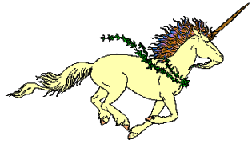

I started creating ray-of-sunshine back in early 2022.
I had seen a post floating around tumblr about neocitites, and the kind of things one could create there.
I was wholly fascinated!
Later that year, after surfing through a lot of websites and reading up Sadness' guides on getting started as a tiny teeny webmaster,
the website started to take its shape.
I knew I wanted to make a sunny and comfy internet spot for me to enjoy - a sort of expressive art form in itself.
In 2023, I began reading through the Yesterweb website.
Though I was only barely active in the community in the moments before its death,
it touched me greatly, and helped me to re-evaluate the way I act and behave online
(and by extension, offline as well).
The discussions sparked by some incredible members made me question the reasons I wanted to create a website,
and what the role of the internet could be in my life.
Now, in 2024, this little dusty corner of the internet got a big rehaul!
My goal is still first and foremost to create art for art's sake.
But, I also would like to use this opportunity to connect with people - maybe in creative ways,
that allow for me to be my inconsistent self, and even disappear for months on end!
Let's see how it goes! :D
Thank You:
♡  The Yesterweb Community
for having transformed the way I think about the internet! Though the project has shut down, it has had an hugely positive inpact on me. Thank you!
The Yesterweb Community
for having transformed the way I think about the internet! Though the project has shut down, it has had an hugely positive inpact on me. Thank you!
♡  Sadness,
founder of the Yesterweb and creator of many simple tutorials that helped me navigate neocities, and gave me some basics on how to use html!
Sadness,
founder of the Yesterweb and creator of many simple tutorials that helped me navigate neocities, and gave me some basics on how to use html!
This little space of mine wouldn't have existed without her.
This website was previously made by tweaking one of her templates over and over! :D
♡ Madness, for inciting much needed change within the YW community.
I hope wherever you are, you're still inspiring change and social transformation.
♡  Cinni!
Her absolutely stunning website was one of the first ones I saw,
and the one that inspired me to at least try to make something myself! Her art and webmastery keeps being an inspiration!
Cinni!
Her absolutely stunning website was one of the first ones I saw,
and the one that inspired me to at least try to make something myself! Her art and webmastery keeps being an inspiration!
♡  Solaria -
his website is amazing and tickles my brain! I had been thinking about a layout closer to what his homepage looks like
for a long time but always thought it would be too difficult.
Solaria -
his website is amazing and tickles my brain! I had been thinking about a layout closer to what his homepage looks like
for a long time but always thought it would be too difficult.
Seeing such a website in the wild, so mobile friendly and well made and aesthetically pleasing, gave me the inspiration
I needed to actually start properly learning some HTML myself!!
His tutorial on border images sealed the deal.
⯎ Neocities, clearly! Thank you for making this hobby so accessible, and for providing an easy way for users to look for eachother's websites.
⯎ Nekoweb, for bringing new passion and fresh blood to creative website making, and for providing hosting to this site currently! :D
⯎ The Odin Project, for providing and compiling such an insanely vast amount of educational material all in one place, for free. Hell yeah!
⯎ ChatGPT - I know that use of Language Models is very controversial, and for very good reasons. But I believe that using it for code is usually okay, and doesn't infringe on anyone's creative rights.
It's been an amazing tool for helping me learn as I went, helping me fix things that kept staying broken, providing some base templates
that were too advanced for me at the time so I could dissect them and ask it for clarifications, etc.
The JavaScript used here so far was completely generated by it,
as it's too advanced for me yet!
Image attribution:
Most of the images and graphics I will use in this site were created by me, and are free to use, with some limitations. Same goes for photos being used, unless stated otherwise.
However, I do use a few graphics and images that do not belong to me! Whenever possible, I link back to original creators - but in the case of really old graphics or memes, this is often impossible.
- None of the graphics in the hoard sections were created by me. Link backs are given to every graphic where I could pinpoint its creator. Likewise, unless stated, none of the buttons on my website were made by me.
- Meme images like the ones in piracy resources and thoughts were not created by me, but clearly meant to be shared around.
- The lil furcadia button is an official graphics that you can get on their site.
-
These little beloved graphics were saved from god knows what corner of the web years ago, but I use them prominently because I love them a lot:
